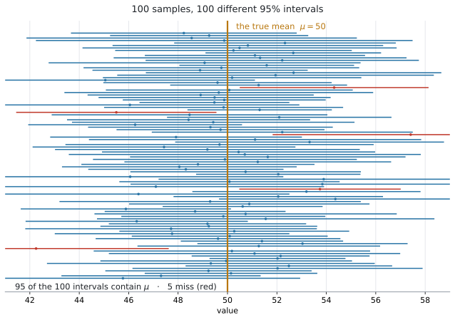
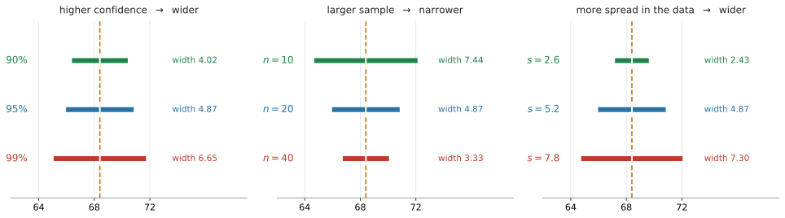
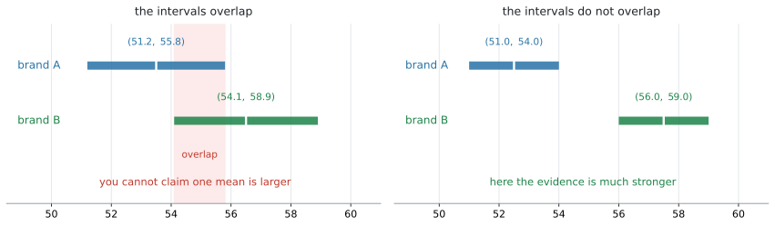

AHL 4.16 — Confidence intervals for the mean of a normal population（正規母集団の平均の信頼区間）
標本平均 \(\bar{x}\) は、標本を取り直すたびに少しずつ変わります。ですから、\(\bar{x}\) だけを使って population mean（母平均）\(\mu\) をぴったり当てることはできません。このページでは、\(\mu\) が入りそうな範囲を confidence interval（信頼区間）として求めます。
読む順番は、こうです。
- なぜ \(1\) つの推定値だけでは足りないのか（第1節）
- \(95\%\) confidence interval の意味（第2節）
- 区間の形と、幅を決めるもの（第3節・第7節）
- \(z\)-interval と \(t\)-interval の使い分け（第5節）
- 文脈に合わせた答え方（第8節）
- confidence interval（信頼区間）が何を表しているかを、正しい言い方で説明できる。
- \(\sigma\) が分かっているときは normal distribution、分からないときは \(t\)-distribution（\(t\) 分布）を使う、と判断できる。
- 電卓の
z Intervalとt Intervalに、データからでも統計量からでも入力でき、母集団が normal であることが前提だと言える。 - 区間の幅を決める \(3\) つ（confidence level・\(n\)・ばらつき）を言える。
- 求めた区間を、問題の文脈の言葉で解釈して書ける。
- \(2\) つの区間が重なっているとき、何が言えて何が言えないかを述べられる。
AHL 4.15 で学んだのは、\(\mu\) が分かっているとき、標本平均 \(\bar{X}\) がどのように変動するかでした。
\[ \bar{X} \sim N\!\left(\mu,\ \frac{\sigma^{2}}{n}\right) \]
このページで新しく学ぶのは、その反対向きの読み方です。 現実には、分からないのは \(\mu\) のほうです。分かるのは、実際にとった標本から計算した \(\bar{x}\) だけです。そこで
\(\mu\) は、だいたいどのあたりにあると言えそうか。
を答えます。「標本平均は母平均の近くに出やすい」という AHL 4.15 の性質を逆に使い、\(\bar{x}\) のまわりに \(\mu\) の候補となる範囲を作る——これが confidence interval です。
\(\bar{X}\) と \(\bar{x}\) は、別のものです。 \(\bar{X}\) は標本を取る前の「変化する標本平均」を表し、\(\bar{x}\) は実際の標本から得られた \(1\) つの数値を表します。このページでは、\(48.6\) のような得られた数値が \(\bar{x}\) です。
AI HL の公式集は 4.14 の次が 4.17 で、4.16 の欄は印刷されていません。使うのは、AHL 4.14 と 4.15 で学んだ standard error（標準誤差）と、normal distribution・\(t\)-distribution の組み合わせです。
試験では、区間そのものは主に GDC で計算します（z Interval と t Interval の \(2\) つがあり、使い分けは第5節で説明します）。点になるのは、どちらを使うかを決めることと、出てきた区間を文脈に合わせて説明することです。
シラバスも、そこを名指ししています。
Students should be able to interpret the meaning of their results in context.
The idea
1. \(1\) つの数では、確からしさが言えません
ある工場のチョコレートの重さを調べるとします。\(20\) 枚を量って、平均が \(48.6\) g でした。
では、\(\mu\) は \(48.6\) g なのでしょうか。 そうとはかぎりません。別の \(20\) 枚を量れば、\(48.2\) g かもしれないし \(49.1\) g かもしれません（AHL 4.15）。
\(\bar{x} = 48.6\) という \(1\) つの数だけでは、それがどれくらい当てになるのかが分かりません。そこで、\(\mu\) の推定のしかたを \(2\) つ並べて考えます。
- point estimate（点推定値）… \(\mu\) を \(1\) つの数 \(\bar{x}\) で推定する
- interval estimate（区間推定）… \(\mu\) が入りそうな範囲で推定する
このページで作るのは、\(2\) つ目のほうです。形は、いつもこうなります。
\[ \text{confidence interval} = \text{point estimate} \ \pm \ \text{margin of error} \tag{1}\]
margin of error（誤差の幅）は、点推定値の左右にとる幅のことです。これが confidence interval（信頼区間）で、\(47.5 < \mu < 49.7\) のような形で答えます。
この \(2\) つの書き方が同じ区間であることは、計算で確かめられます。
\[ \text{中心} = \frac{47.5 + 49.7}{2} = 48.6, \qquad \text{margin of error} = 49.7 - 48.6 = 1.1 \]
ですから \(47.5 < \mu < 49.7\) は、\(48.6 \pm 1.1\) と同じ区間です。
\((47.5,\ 49.7)\) という区間は、\(2\) つのことを同時に言っています。
- どこか … 中心が \(48.6\)。これは \(\bar{x}\) そのもの、つまり point estimate です
- どれくらい確かか … margin of error が \(1.1\)（幅は \(2.2\)）。同じ confidence level で比べたとき、狭いほどはっきりしたことが言えています
「平均は \(48.6\) g です」だけでは、\(2\) つ目が抜けます。幅があることが、point estimate との違いです。
2. 「\(95\%\) の信頼区間」とは何か
答案でいちばん問われるのは、この意味のほうです。 まず、言葉で押さえてください。
\(95\%\) confidence interval は、「同じ方法で標本を取り、同じ方法で区間を作ることを何度もくり返すと、長期的には約 \(95\%\) の区間が真の母平均 \(\mu\) を含む」という意味です。
図で見ると、こうなります。

図 1 は、\(\mu = 50\) の母集団から \(12\) 個ずつの標本を \(100\) 回とって、そのたびに \(95\%\) 区間を作ったものです。次の順に見てください。
- 横線 \(1\) 本が、\(1\) 回の標本から作った信頼区間です
- 標本が変わるので、区間の中心も両端も、毎回変わります
- オレンジ色の縦線が、動かない真の母平均 \(\mu = 50\) です
- 青い区間は \(\mu\) を含み、赤い区間は含んでいません
- \(100\) 本すべてが含むのではなく、長期的に約 \(95\%\) が含みます
\(95\%\) は長期的な割合です。\(100\) 回作ったときに \(\mu\) を含む本数は、\(93\) 本のことも \(97\) 本のこともあります。
図 1 はその一例で、たまたま \(95\) 本が含んでいます。
区間を計算した後は、\(\mu\) は動かず、区間もすでに決まっています。「変わる」のは、標本を取り直したときに作られる区間のほうです。
ですから、いま手元にある \(1\) つの区間は、\(\mu\) を含んでいるか、含んでいないかのどちらかです。図 1 の赤い区間は、はじめから外しています。\(95\%\) は、その作り方の成績を表しています。
答案では、この違いに深入りする必要はありません。 次の型で書けば、この論点に触れずに済みます（第8節）。
試験ではこう書く
We are \(95\%\) confident that the population mean mass of a chocolate bar lies between \(47.5\) g and \(49.7\) g.
（チョコレートバーの母平均質量は \(47.5\) g から \(49.7\) g のあいだにあると、\(95\%\) の信頼度で推定できる、という意味です。）
We are 95% confident that ... という書き出しが、そのまま使えます。
3. 区間は、いつも「\(\bar{x}\) \(\pm\) margin of error」の形です
confidence interval は、分からない population mean（母平均）\(\mu\) を、手元の sample mean（標本平均）\(\bar{x}\) から推定する範囲です。\(\bar{x}\) を中心にして、その左右に margin of error を足し引きして作ります。
\[ \bar{x} \ \pm \ (\text{critical value}) \times (\text{standard error}) \tag{2}\]
- \(\bar{x}\) … 区間の中心となる sample mean（標本平均）
- critical value（臨界値）… confidence level（信頼水準）に合わせて、standard error 何個分まで区間を広げるかを表す数
- standard error（標準誤差）… sample mean が標本ごとに、どれくらいばらつくかを表す値
この \(2\) つの中身は、\(\sigma\) が分かっているかどうかで変わります。
\(\sigma\) が分かっている場合
\[ \bar{x} \ \pm \ z^{*} \frac{\sigma}{\sqrt{n}} \tag{3}\]
- \(\sigma\) … population standard deviation（母標準偏差）
- \(n\) … sample size（標本の大きさ）
- \(\dfrac{\sigma}{\sqrt{n}}\) … sample mean の standard error（AHL 4.15 で出てきた \(\bar{X}\) の standard deviation そのものです）
- \(z^{*}\) … normal distribution から決まる critical value
\(95\%\) confidence interval では、\(z^{*} = 1.96\) です。
\(\sigma\) が分からない場合
\[ \bar{x} \ \pm \ t^{*} \frac{s}{\sqrt{n}} \tag{4}\]
- \(s\) … sample standard deviation（標本標準偏差）。ここでは、母標準偏差の不偏推定値 \(s_{n-1}\)（電卓の \(s_x\)）のことです
- \(\dfrac{s}{\sqrt{n}}\) … \(\sigma\) を \(s\) で置きかえて推定した standard error
- \(t^{*}\) … \(t\)-distribution から決まる critical value
なぜ \(z\) と \(t\) を使い分けるのか
- \(\sigma\) が分かっている場合は、standard error を正確に求められます。ですから normal distribution の \(z^{*}\) を使います。
- \(\sigma\) が分からない場合は、標本から求めた \(s\) で推定します。推定による不確かさが加わるので、そのぶんを見こんで、裾が少し広い \(t\)-distribution を使います（第6節）。
- \(t^{*}\) は、confidence level と degrees of freedom（自由度）\(\text{df} = n - 1\) によって決まります。
\[ \boxed{\ \sigma \ \text{が既知} \ \Rightarrow \ z \qquad \sigma \ \text{が未知} \ \Rightarrow \ t\ } \tag{5}\]
この判断は、計算より先にします（第5節）。
この式を手で計算する必要はありません。 電卓が区間の両端を返します。
ただ、式の形を知っていると、電卓の選び方と入力を確かめられます。 \(\sigma\) の欄があるのが z Interval、sx の欄があるのが t Interval です。そして返ってきた \(2\) 数のまん中は、必ず \(\bar{x}\) になります。そこがずれていたら、入力を間違えています。
4. 母集団が normally distributed であることを確かめます
シラバスの Content 欄は、こう書かれています。
Confidence intervals for the mean of a normal population.
この項目では、基本的に母集団が normally distributed（正規分布にしたがう）と仮定します。 問題文には normally distributed と書かれます。このページの問題は、すべてこの前提でできています。
母集団が正規分布でない場合でも、標本が十分に大きければ、AHL 4.15 の central limit theorem（中心極限定理）によって標本平均を近似的に正規分布として扱えることがあります。どちらを使えるかは、問題文の条件を確かめてください。
問題文に正規性が明記されていないのに、小さい標本でこの方法を使った場合は、その仮定を答案に書くよう求められることがあります。State the assumption you have made（おいた仮定を述べなさい）と聞かれたら
試験ではこう書く
It is assumed that the population is normally distributed.
と書きます。SL 4.11 の \(t\) 検定でも、同じ仮定を書きました。
5. 計算の前に、\(\sigma\) が分かっているか確認する
この項目でいちばん失点するのは、ここです。 そして、計算を始める前に決めることです。シラバスの Guidance 欄が、はっきり指定しています。
Use of the normal distribution when \(\sigma\) is known and the \(t\)-distribution when \(\sigma\) is unknown, regardless of sample size.
判断のしかたは 式 5 のとおりで、\(\sigma\) が既知なら z Interval、未知なら t Interval です（第3節）。ここで見るのは、問題文からその \(\sigma\) を読み取るところです。
注意が \(4\) つあります。
- \(n\) の大小だけで \(z\) と \(t\) を選ばないでください。 見るのは、\(\sigma\) が分かっているかどうかだけです。
- 問題文に \(s\) や
sample standard deviationと書かれていても、\(\sigma\) が分かったことにはなりません。 regardless of sample sizeは、「標本が大きければ、未知の \(\sigma\) を既知としてよい」という意味ではありません。- このページの範囲では、\(\sigma\) が未知なら、標本が大きくても \(t\)-interval を選びます。
問題文の書き方で読み分けます。
| 問題文の表現 | 分かっているもの | 使う分布 | GDC |
|---|---|---|---|
the population standard deviation is ... |
\(\sigma\) | normal | z Interval |
| \(\sigma = 2.5\) のように直接示される | \(\sigma\) | normal | z Interval |
the sample standard deviation is ... |
\(s\) | \(t\) | t Interval |
| データの列だけが与えられる | GDC が \(s\) を計算する | \(t\) | t Interval |
sample variance が与えられたときは、そのまま入れられません
問題文が the sample variance is 14.7 のように \(s_n^{2}\) を与えてくることがあります。この値は \(n\) で割ったものなので、電卓の sx にそのまま入れてはいけません。 \(s_{n-1}^{2} = \dfrac{n}{n-1}s_n^{2}\) に直してから使います（AHL 4.18b）。
the unbiased estimate of the population standard deviation is 2.5 と書かれていれば、それが \(s_{n-1}\) そのものです。
it is known from experience that the standard deviation is 2.5 のような書き方もあります。このときは、何が既知なのかを読み取ってください。ここで既知なのは母集団の standard deviation、つまり \(\sigma\) ですから z Interval です。
population と書いてあるか、sample と書いてあるか。 そこに丸を付けてから始めてください（AHL 4.14）。
AHL 4.15 の \(n > 30\) という目安は、central limit theorem が使えるかどうかの話でした。
こちらは、\(\sigma\) が分かっているかどうかの話です。混ぜないでください。
現実には、\(\mu\) が分からないのに \(\sigma\) だけ分かる、という状況はまれです。ですから t Interval を使う問題のほうがよく出ます。
z Interval が出るのは、「長年の記録から \(\sigma\) が分かっている」という設定のときです。
6. なぜ \(t\)-distribution を使うのか
第3節で見たとおり、\(\sigma\) が未知のときは、\(s\) で standard error を推定するぶん不確かさが増えます。それを埋め合わせるのが \(t\)-distribution（\(t\) 分布）です。ここでは、その中身を数で見ます。
\(t\)-distribution は、SL 4.11 の \(t\) 検定で一度出てきています。この項目でも電卓が使うだけなので、形を細かく知る必要はありません。知っておくとよいのは、\(2\) つです。
\(1\) つ目。\(t\)-distribution は normal distribution より裾が広いので、同じ confidence level なら critical value が大きくなります。
| confidence level | normal の critical value | \(t\) の critical value（\(n = 8\)、\(\text{df} = 7\)） | \(t\) の critical value（\(n = 20\)、\(\text{df} = 19\)） |
|---|---|---|---|
| \(90\%\) | \(1.645\) | \(1.895\) | \(1.729\) |
| \(95\%\) | \(1.960\) | \(2.365\) | \(2.093\) |
| \(99\%\) | \(2.576\) | \(3.499\) | \(2.861\) |
この表は、比べるためのものです。 試験で critical value を表から引く必要はありません。電卓が区間そのものを返します。
\(2\) つ目。\(n\) が大きくなると \(s\) による推定が安定するので、\(t\)-distribution は normal distribution に近づきます。 表 2 で、\(n = 8\) の \(2.365\) より \(n = 20\) の \(2.093\) のほうが \(1.960\) に近いことを見てください。
ただし、どこまでいっても normal より少し大きいままです。これが regardless of sample size の背景にある事実です。
degrees of freedom は \(n - 1\) です
\(t\)-distribution は、degrees of freedom（自由度）によって形が変わります。\(1\) 標本の平均の \(t\)-interval では
\[ \text{degrees of freedom} = n - 1 \tag{6}\]
です。理由は、標本平均を決めてしまうと、\(n\) 個の偏差のうち自由に決められるのは \(n - 1\) 個になるからです（\(n-1\) で割った \(s_{n-1}\) を使うのも、同じ事情です。AHL 4.14）。
たとえば \(n = 8\) なら、\(\text{df} = 8 - 1 = 7\) です。
電卓は自動で計算します。 \(n\) を入力すれば自由度は勝手に決まるので、試験で複雑な理論を覚える必要はありません。
7. 区間の幅を決める \(3\) つ
以下は、表に書かれている要素以外の条件が同じ場合の比較です。

| 変えるもの | 幅への影響 | なぜ |
|---|---|---|
| confidence level を上げる（\(95\% \to 99\%\)） | 広くなる | critical value が大きくなる |
| \(n\) を増やす | 狭くなる | standard error が小さくなる |
| データのばらつきが大きくなる | 広くなる | standard error が大きくなる |
それぞれ、次のようにつながっています。
- confidence level を上げる → より多くの場合に \(\mu\) を含みたい → critical value が大きくなる → 区間が広くなる
- \(n\) を増やす → standard error \(\dfrac{s}{\sqrt{n}}\) または \(\dfrac{\sigma}{\sqrt{n}}\) が小さくなる → 区間が狭くなる
- データのばらつきが大きくなる → \(s\) または \(\sigma\) が大きくなる → standard error が大きくなる → 区間が広くなる
confidence level を高くすると、同じ方法をくり返したときに \(\mu\) を含む割合は高くなります。その代わり、推定できる範囲は広くなり、精度は低くなります。
図 2 の左で、\(4.02 \to 4.87 \to 6.65\) と広がっているとおりです。
「\(\mu\) は \(0\) から \(1000\) のあいだ」と言えば、まず外しません。しかし、何も言っていないのと同じです。
\(95\%\) という水準は、この \(2\) つの折り合いとして、よく使われている値です。
standard error は \(\dfrac{s}{\sqrt{n}}\) なので、\(n\) を \(4\) 倍にすると standard error はちょうど半分になります。
幅がちょうど半分になるのは、critical value と standard deviation が同じままのときです。\(\sigma\) が既知で normal を使うときは、critical value が動かないのでちょうど半分です。
\(t\) を使うときは、\(n\) が増えると critical value も一緒に小さくなります（第6節）。ですから幅は、半分よりもう少し縮みます。
8. 文脈の言葉で書く
シラバスが名指ししている、この項目の答案での中心です。
Students should be able to interpret the meaning of their results in context.
書き方は、いつも同じ型です。
試験ではこう書く
We are [confidence level]% confident that the population mean [quantity] lies between [lower bound] and [upper bound] [unit].
空欄に入れるものは、次のとおりです。
- confidence level … \(90\)、\(95\)、\(99\) など
- population mean quantity … 何の母平均かを、その問題の言葉で
- lower and upper bounds … GDC で得た区間の下限・上限
- unit … g、hours、mg per litre など
チョコレートの例なら、こうなります。
試験ではこう書く
We are \(95\%\) confident that the population mean mass of a chocolate bar lies between \(47.5\) g and \(49.7\) g.
「何の母平均か」が抜けている答案が、いちばん多いです。次の答案では足りません。
We are \(95\%\) confident that \(\mu\) is between \(47.5\) and \(49.7\).
足りない理由は \(3\) つです。
- \(\mu\) が何の平均かが分からない
- 単位がない
population meanという意味が、文章に出ていない
the population mean と書いておけば確実です。
“\(95\%\) of the chocolate bars weigh between \(47.5\) g and \(49.7\) g” は誤りです。
confidence interval が言っているのは、population mean \(\mu\) がどこにあるかであって、\(1\) 枚ずつの重さの話ではありません。
9. 区間が重なっているときに言えること
シラバスの Connections 欄に、こう書かれています。
Claiming brand A is “better” on average than brand B can mean very little if there is a large overlap between the confidence intervals of the two means.

図 3 の左では、\(2\) つの区間が重なっています（図のピンク色の部分です）。brand B の \(\bar{x}\) のほうが大きくても、「B のほうが母平均が大きい」とは言い切れません。
ここで、言えることと言えないことを分けてください。
- \(2\) つの区間が重なっていることは、\(2\) つの母平均が等しいことの証明ではありません。
- ただし、この \(2\) つの区間だけを根拠として、「一方の母平均がもう一方より大きい」と断定することはできません。
- 差を正式に検討するには、SL 4.11 の \(2\) 標本の \(t\) 検定のような、別の推測統計の方法が必要になります。
右のように重なっていなければ、話は変わります。区間に含まれる値については、A 側のどの値も B 側のどの値より小さくなっているので、言えることがずっと強くなります。
ただし、信頼区間は「\(\mu\) としてありうる値をすべて集めたもの」ではありません。区間の外の値が不可能だと証明されたわけではないことは、頭に置いておいてください。
試験ではこう書く（重なっているとき）
The two confidence intervals overlap between \(54.1\) and \(55.8\) hundred hours, so these intervals do not provide sufficient evidence that the population mean lifetime for brand B is larger than that for brand A. The two population means could be equal.
（\(2\) つの区間は \(54.1\) から \(55.8\) で重なっているので、この \(2\) つの区間だけでは、B の母平均のほうが大きいと言う根拠にならない、という意味です。\(2\) つの母平均が等しい可能性も残ります。）
overlap（重なる）という語を使うのが、この型の目印です。
Why it works
ここで説明するのは \(1\) つです。なぜ「\(\bar{x}\) \(\pm\) margin of error」という形になるのか。
AHL 4.15 から、\(\sigma\) が分かっているとき
\[ \bar{X} \sim N\!\left(\mu,\ \frac{\sigma^{2}}{n}\right) \]
でした。この分布で、まん中の \(95\%\) に入る範囲を考えます。critical value を \(1.96\) とすると
\[ \mu - 1.96\frac{\sigma}{\sqrt{n}} \ < \ \bar{X} \ < \ \mu + 1.96\frac{\sigma}{\sqrt{n}} \]
が、確率 \(0.95\) で成り立ちます。「\(\bar{X}\) は \(\mu\) の近くに来る」と読める式です。
ここで、\(\mu\) と \(\bar{X}\) を入れかえます。 上の式を \(\mu\) について解きます。
\[ \bar{X} - 1.96\frac{\sigma}{\sqrt{n}} \ < \ \mu \ < \ \bar{X} + 1.96\frac{\sigma}{\sqrt{n}} \]
同じ不等式です。 移項しただけで、成り立つ確率も \(0.95\) のままです。
そして、この形は「\(\mu\) は \(\bar{X}\) の近くにある」と読めます。\(\bar{X}\) が \(\mu\) の近くに来るなら、\(\mu\) も \(\bar{X}\) の近くにある——言いかえただけのようですが、これが信頼区間の作り方そのものです。
実際に標本をとって \(\bar{X}\) の値 \(\bar{x}\) が決まると、これが 式 2 の区間になります。
「確率 \(0.95\)」が、どこに掛かっているかに注意してください。
\(\bar{X}\) が大文字のあいだは、まだ標本をとっていません。動くのは \(\bar{X}\) のほうで、確率はそこに掛かっています。
標本をとって \(\bar{x} = 48.6\) と決まったあとは、\(\mu\) もその区間も動きません。だから第2節のような言い方になるのです。
\(\sigma\) が分からないときは、\(\sigma\) の代わりに \(s_{n-1}\) を入れます。推定値で置きかえたぶん不確かさが増えるので、\(1.96\) ではなく \(t\) の critical value（もう少し大きい値）を使います。
Worked examples
問題文は英語です。意味が理解できなかったら、問題文の下の「日本語訳」を開いてください。解説は日本語です。
- Parameter … 求める母平均 \(\mu\) が何の平均かと、その単位を確かめる
- Conditions … 母集団が normally distributed であることを確かめる（第4節）
- Method … \(\sigma\) が既知なら \(z\)-interval、未知なら \(t\)-interval（第5節）
- Interpret … 区間を、文脈と単位を含む文で答える（第8節）
計算を始める前に、\(3\) の判断を答案に \(1\) 行で書いてください。
試験ではこう書く
Method: \(\sigma\) is known, so a \(z\)-interval is used.
Method: \(\sigma\) is unknown and only \(s\) is available, so a \(t\)-interval is used.
例題 1 The mass of a chocolate bar produced by a machine is normally distributed. From long experience, the population standard deviation is known to be \(2.5\) g.
A random sample of \(20\) bars has a mean mass of \(48.6\) g.
(a) State, with a reason, whether a normal distribution or a \(t\)-distribution should be used.
(b) Find a \(95\%\) confidence interval for the mean mass of a chocolate bar.
(c) Interpret your answer to part (b) in context.
日本語訳
ある機械が作るチョコレートの重さは、正規分布にしたがいます。長年の記録から、母標準偏差は \(2.5\) g と分かっています。
from long experience は「長年の記録から」、population standard deviation は「母標準偏差」という意味です。
無作為にとった \(20\) 枚の標本の平均の重さは \(48.6\) g でした。
(a) 正規分布と \(t\) 分布のどちらを使うべきかを、理由を示して述べなさい。
(b) チョコレート \(1\) 枚の平均の重さについて、\(95\%\) 信頼区間を求めなさい。
(c) (b) の答えを、文脈の中で解釈しなさい。
Parameter. 求めるのは、チョコレート \(1\) 枚の母平均の質量（単位は g）です。
Conditions. 問題文に normally distributed とあります ✓（第4節）
(a) 問題文に population standard deviation is known to be 2.5 とあります。\(\sigma\) が与えられているので、normal です（第5節）。
試験ではこう書く
The population standard deviation \(\sigma = 2.5\) is known, so the normal distribution (a \(z\)-interval) should be used.
(b) Method: \(\sigma\) is known, so a \(z\)-interval is used.
z Interval に入れます（GDC 第1節）。
σ: 2.5 x̄: 48.6 n: 20 C Level: 0.95\[ 47.5 < \mu < 49.7 \quad (\text{g}) \]
検算。 区間のまん中は \(\dfrac{47.5 + 49.7}{2} = 48.6 = \bar{x}\) ✓（第3節）
式 3 の形と対応させると、こうなります。
\[ \text{standard error} = \frac{2.5}{\sqrt{20}} = 0.559, \qquad \text{margin of error} = 1.96 \times 0.559 = 1.10 \]
\[ 48.6 \pm 1.10 \quad \Longrightarrow \quad 47.5 < \mu < 49.7 \]
point estimate は \(48.6\)、margin of error は \(1.10\) です。
(c) 第8節の型で書きます。
試験ではこう書く
We are \(95\%\) confident that the population mean mass of a chocolate bar produced by this machine lies between \(47.5\) g and \(49.7\) g.
（この機械が作るチョコレート \(1\) 枚の平均の重さは、\(47.5\) g から \(49.7\) g のあいだにあると \(95\%\) の確信をもって言える、という意味です。）
(a) \(\sigma = 2.5\) is the known population standard deviation, so the normal distribution is used.
(b) \[ 47.5 < \mu < 49.7 \quad (\text{g}) \]
(c) We are \(95\%\) confident that the population mean mass of a chocolate bar lies between \(47.5\) g and \(49.7\) g.
例題 2 A laboratory measures the concentration, in mg per litre, of a chemical in eight samples of water taken from a lake. The concentration is normally distributed.
| \(12.1\) | \(11.8\) | \(12.4\) | \(12.0\) | \(11.6\) | \(12.3\) | \(12.1\) | \(11.7\) |
(a) Find the sample mean and an unbiased estimate of the population standard deviation.
(b) Find a \(95\%\) confidence interval for the mean concentration.
(c) A scientist claims that the mean concentration is \(12.5\) mg per litre. Comment on this claim.
日本語訳
ある研究室が、湖から採った \(8\) 個の水の標本について、化学物質の濃度（\(1\) リットルあたり mg）を測りました。濃度は正規分布にしたがいます。
表の見出しは Concentration (mg per litre) で「濃度（\(1\) リットルあたり mg）」です。
(a) 標本平均と、母標準偏差の不偏推定値を求めなさい。
(b) 平均濃度について、\(95\%\) 信頼区間を求めなさい。
(c) ある科学者が、平均濃度は \(12.5\) mg/L だと主張しています。この主張について述べなさい。
Parameter. 求めるのは、水中の化学物質の母平均の濃度（単位は mg per litre）です。
Conditions. 問題文に The concentration is normally distributed. とあります ✓
(a) データを電卓の列に入れて One-Variable Statistics を走らせます。
\[ \bar{x} = 12.0, \qquad s_{n-1} = 0.283 \]
読むのは \(s_x\) のほうです（AHL 4.14）。\(\sigma_x = 0.265\) は不偏推定値ではありません。
(b) Method: \(\sigma\) is unknown and only \(s\) is available, so a \(t\)-interval is used.
\(\sigma\) は与えられていません。データから \(s\) を出したので、\(t\)-interval です（第5節）。
データがそのまま与えられているので、t Interval の Data を選べば、\(\bar{x}\) も \(s\) も電卓が計算します。
Data Input Method: Data List: (データの列) C Level: 0.95電卓が返すのは \((11.7635,\ 12.2365)\) です。\(3\) 桁に丸めると、次のようになります（この問題では小数第1位までです）。
\[ 11.8 < \mu < 12.2 \quad (\text{mg per litre}) \]
式 4 の形と対応させると、\(\text{df} = 8 - 1 = 7\)、\(t^{*} = 2.365\)、standard error は \(\dfrac{0.283}{\sqrt{8}} = 0.100\) なので
\[ 12.0 \pm 2.365 \times 0.100 = 12.0 \pm 0.237 \]
です。検算。 まん中は \(12.0 = \bar{x}\) ✓
(c) 次の \(3\) 段階で書きます。
- 得られた \(95\%\) confidence interval は \(11.8 < \mu < 12.2\) mg per litre
- 主張された \(12.5\) mg per litre は、上限 \(12.2\) より大きい
- したがって、この標本はその主張を支持しない
試験ではこう書く
The value \(12.5\) lies outside the \(95\%\) confidence interval \(11.8 < \mu < 12.2\), so the data does not support the scientist’s claim.
（\(12.5\) は \(95\%\) 信頼区間の外にあるので、このデータはその主張を支持しない、という意味です。）
(a) \[ \bar{x} = 12.0, \qquad s_{n-1} = 0.283 \]
(b) Method: \(\sigma\) is unknown, so a \(t\)-interval is used. \[ 11.8 < \mu < 12.2 \quad (\text{mg per litre}) \]
(c) \(12.5\) lies outside the interval \(11.8 < \mu < 12.2\), so the data does not support the claim.
例題 3 Test scores are normally distributed. A random sample of \(20\) students sat a test. The sample mean score was \(68.4\) and the unbiased estimate of the population standard deviation was \(5.2\).
(a) Find a \(90\%\) confidence interval for the mean score of all students.
(b) Find a \(99\%\) confidence interval for the mean score.
(c) Comment on how the two intervals differ, and explain why.
日本語訳
テストの得点は正規分布にしたがいます。無作為に選んだ \(20\) 人の生徒がテストを受けました。標本平均の得点は \(68.4\)、母標準偏差の不偏推定値は \(5.2\) でした。
(a) すべての生徒の平均点について、\(90\%\) 信頼区間を求めなさい。
(b) 平均点について、\(99\%\) 信頼区間を求めなさい。
(c) \(2\) つの区間がどう違うかを述べ、その理由を説明しなさい。
Parameter. 求めるのは、すべての生徒の母平均の得点です。
Conditions. 問題文に Test scores are normally distributed. とあります ✓
(a) Method: \(\sigma\) is unknown and only \(s\) is available, so a \(t\)-interval is used.
\(\sigma\) ではなく不偏推定値（\(s\)）が与えられています。ですから \(t\)-interval です（第5節）。
データの列はないので、t Interval の Stats を選びます（GDC 第2節）。
Data Input Method: Stats x̄: 68.4 sx: 5.2 n: 20 C Level: 0.90\[ 66.4 < \mu < 70.4 \]
(b) C Level を \(0.99\) に変えるだけです。
\[ 65.1 < \mu < 71.7 \]
(c) \(99\%\) のほうが広くなっています。
生の値は \((66.3894,\ 70.4106)\) と \((65.0734,\ 71.7266)\) です。幅は、丸める前の値から出します。
\[ \text{幅} \quad 4.02 \ \to \ 6.65 \]
数値だけで終わらせず、理由まで書きます。\(99\%\) 区間は、より高い割合で母平均を含むように作るため、\(90\%\) 区間より広くなります。confidence level を上げると、母平均を含む確信は高まりますが、推定できる範囲は広くなります（第7節）。
more confident と more precise は、別のことです。
- higher confidence … confidence level が高い（\(99\% > 90\%\)）
- more precise … 区間が狭い（\(4.02 < 6.65\) なので、\(90\%\) 区間のほうが precise）
\(99\%\) 区間は higher confidence ですが、more precise ではありません。
試験ではこう書く
The \(99\%\) interval is wider than the \(90\%\) interval (\(6.65\) compared with \(4.02\)). A higher confidence level means that a larger proportion of such intervals contain the population mean, so a wider range of values must be included. The \(99\%\) interval therefore gives higher confidence but a less precise estimate.
（confidence level が高いほど、\(\mu\) を含む区間の割合は高くなるので、より広い範囲を含めなければならない。\(99\%\) 区間は確信は高いが、precise ではない、という意味です。）
(a) Method: \(\sigma\) is unknown, so a \(t\)-interval is used. \[ 66.4 < \mu < 70.4 \]
(b) \[ 65.1 < \mu < 71.7 \]
(c) The \(99\%\) interval is wider. A higher confidence level requires a wider interval, so the estimate has higher confidence but is less precise.
例題 4 Two brands of light bulb are tested. For brand A, a \(95\%\) confidence interval for the mean lifetime, in hundreds of hours, is \(51.2 < \mu_A < 55.8\). For brand B, a \(95\%\) confidence interval is \(54.1 < \mu_B < 58.9\).
(a) Write down the sample mean lifetime for each brand.
(b) A shop advertises that brand B lasts longer on average than brand A. Comment on this claim.
日本語訳
\(2\) つのブランドの電球を調べました。ブランド A について、平均寿命（\(100\) 時間単位）の \(95\%\) 信頼区間は \(51.2 < \mu_A < 55.8\) です。ブランド B については \(54.1 < \mu_B < 58.9\) です。
light bulb は「電球」、lifetime は「寿命」、in hundreds of hours は「\(100\) 時間を単位として」、advertises は「宣伝する」という意味です。
(a) 各ブランドの標本平均の寿命を書きなさい。
(b) ある店が、ブランド B のほうが平均寿命が長いと宣伝しています。この主張について述べなさい。
Method. この問題では、区間そのものが与えられています。ですから z Interval も t Interval も使いません。読み取るだけです。
(a) 区間のまん中が \(\bar{x}\) です（第3節）。
\[ \bar{x}_A = \frac{51.2 + 55.8}{2} = 53.5, \qquad \bar{x}_B = \frac{54.1 + 58.9}{2} = 56.5 \]
(b) \(\bar{x}_B = 56.5\) のほうが大きいのは確かです。しかし、\(2\) つの区間は重なっています（第9節）。
重なっているのは、\(54.1\) から \(55.8\) までです。この範囲の値は、両方の \(\mu\) になりえます。 ですから、この \(2\) つの区間だけを根拠に「B の母平均のほうが大きい」と断定することはできません。 \(\mu_A = \mu_B\) という可能性も残ります。
試験ではこう書く
Although the sample mean for brand B (\(56.5\)) is larger than for brand A (\(53.5\)), the two confidence intervals overlap between \(54.1\) and \(55.8\) hundred hours. These intervals do not provide sufficient evidence that the population mean lifetime for brand B is larger than that for brand A; the two population means could be equal.
（B の標本平均のほうが大きいが、\(2\) つの信頼区間は重なっており、両方の平均が重なりの中にある可能性がある。したがって主張を支持するだけの根拠はない、という意味です。）
(a) \[ \bar{x}_A = 53.5, \qquad \bar{x}_B = 56.5 \quad (\text{hundreds of hours}) \]
(b) The intervals overlap between \(54.1\) and \(55.8\) hundred hours, so these intervals do not provide sufficient evidence that brand B has the larger population mean lifetime. The two population means could be equal.
Common errors
誤り：\(n = 200\) と大きいから \(z\)-interval でよい、とする。
シラバスは regardless of sample size と書いています。\(n\) の大きさは、選択に関係しません。
正しい判断：\(\sigma\) が未知なら、\(n = 200\) でも \(t\)-interval です（第5節）。
df を確かめない
誤り：t Interval の結果に出た df を見ずに答えを写す。
\(1\) 標本の \(t\)-interval では \(\text{df} = n - 1\) なので、ここが合っていなければ \(n\) の入力が違っています。
正しい判断：\(n = 8\) なら df は \(7\) だと、その場で確かめます（第6節）。
C Level に \(95\) と入れる
誤り：C Level の欄に \(95\) と入力する。
TI-Nspire の C Level は、小数で入れる欄です。
正しい判断：\(95\%\) なら \(0.95\)、\(99\%\) なら \(0.99\) と入れます。
誤り：“There is a \(95\%\) probability that \(\mu\) lies between \(47.5\) and \(49.7\).”
計算した後は \(\mu\) も区間も動かず、変わるのは新しい標本から作られる区間のほうです（第2節）。
正しい判断：We are 95% confident that ... の型で書きます。
誤り：“\(95\%\) of the chocolate bars weigh between \(47.5\) g and \(49.7\) g.”
confidence interval は population mean \(\mu\) の居場所についての区間で、\(1\) 枚ずつの重さの散らばりではありません。
正しい判断：the population mean ... という語を必ず入れます（第8節）。
誤り：“We are \(95\%\) confident that \(\mu\) is between \(47.5\) and \(49.7\).”
これでは、\(\mu\) が何の母平均かが分からず、単位もありません。
正しい判断：the population mean mass of a chocolate bar のように、問題の言葉と単位で書きます（第8節）。
誤り：標本平均に差があるから、\(\mu_B > \mu_A\) だと断定する。
区間が重なっていれば、\(\mu_A = \mu_B\) という可能性が残ります。
正しい判断：overlap という語を使い、「これらの区間だけでは十分な根拠にならない」と書きます（第9節）。
誤り：\(99\%\) の区間のほうが \(95\%\) より狭く、精度が高いと考える。
confidence level を上げると critical value が大きくなるので、区間は広くなります。
正しい判断：higher confidence と more precise は別のことです（第7節）。
誤り：「margin of error は \(1.10\)」だけを書いて終わる。
答えは区間で、両端の \(2\) つの数が必要です。
正しい判断：\(47.5 < \mu < 49.7\) のように、両端を書きます。
Using your GDC (TI-Nspire CX II)
この項目は、電卓の操作そのものが中身です。使うのは \(2\) つのメニューだけです。
menu → Statistics → Confidence Intervalsここに z Interval と t Interval が並んでいます。
母標準偏差 \(\sigma\) が与えられていますか。
- はい →
z Interval - いいえ →
t Interval
生データ（数値の列）が与えられていますか。
- はい →
Dataを選ぶ - いいえ →
Statsを選ぶ
1. z Interval — \(\sigma\) が分かっているとき
menu → Statistics → Confidence Intervals → z IntervalData Input Method には Data と Stats があります。\(\bar{x}\) と \(n\) が与えられている問題では Stats を選びます。次の欄が出ます。
| 欄 | 意味 | 入力例（例題1） |
|---|---|---|
σ |
population standard deviation（母標準偏差） | \(2.5\) |
x̄ |
標本平均 | \(48.6\) |
n |
標本の大きさ | \(20\) |
C Level |
confidence level（信頼水準）。小数で | \(0.95\) |
結果の CLower と CUpper が、区間の両端です。
2. t Interval — \(\sigma\) が分からないとき
menu → Statistics → Confidence Intervals → t IntervalData Input Method は、z Interval と同じく Data と Stats の \(2\) 通りです。ただし、データの列がそのまま与えられる問題は t Interval のほうによく出ます。
| 問題の与えられ方 | 選ぶもの | 入れるもの |
|---|---|---|
| データの列がある | Data |
列の名前と C Level |
| \(\bar{x}\)、\(s\)、\(n\) だけがある | Stats |
\(\bar{x}\)、sx、\(n\)、C Level |
データがあるなら Data を選んでください。 電卓が \(\bar{x}\) と \(s\) を計算するので、書き写す手間も、丸め誤差も入りません。
Stats を選んだときの欄は、こうです。
| 欄 | 意味 | 入力例（例題3） |
|---|---|---|
x̄ |
標本平均 | \(68.4\) |
sx |
sample standard deviation（標本標準偏差）\(s_{n-1}\) | \(5.2\) |
n |
標本の大きさ | \(20\) |
C Level |
confidence level（信頼水準）。小数で | \(0.90\) |
sx に入れるのは \(s_{n-1}\)（電卓の \(s_x\)）です。\(\sigma_x\) ではありません。
結果には df も表示されます。これは degrees of freedom（自由度）で、\(1\) 標本の \(t\)-interval では \(n - 1\) です。\(n = 20\) なら df は \(19\) になります（第6節）。
3. 結果の読み方
どちらの機能でも、返ってくる画面には次が並びます。
| 表示 | 意味 |
|---|---|
CLower |
区間の下端 |
CUpper |
区間の上端 |
x̄ |
標本平均。区間のまん中になっているか確かめる |
ME |
margin of error（誤差の幅） |
df |
自由度。t Interval のときだけ出る。\(n-1\) になっているか確かめる |
答案には CLower と CUpper を書きます。 答えは \(3\) 桁で書きます。丸めるときは、画面の値から丸めてください。
4. 検算のしかた
\(2\) つ、その場でできる確認があります。
- まん中が \(\bar{x}\) か。 \(\dfrac{\text{CLower} + \text{CUpper}}{2}\) が \(\bar{x}\) になっていなければ、入力が違います
dfが \(n - 1\) か。t Intervalで \(n\) を入れ間違えると、ここに出ます
Exercises の前に — セルフチェック
Exercises に進む前に、\(3\) つだけ確かめてください。
\(z\)-interval です。\(\sigma\) が既知なら normal distribution を使います。\(n\) の大きさは関係しません（第5節）。
その意味ではありません。 同じ方法でくり返し作った区間の約 \(95\%\) が \(\mu\) を含む、という意味です（第2節）。
ほかの条件が同じなら、狭くなります。 standard error \(\dfrac{s}{\sqrt{n}}\) が小さくなるからです（第7節）。
Exercises
各問題に、折りたたみが3つ付いています。日本語訳、解答例（答案用紙に書くべきこと。英語です）、解説（なぜそうなるか。日本語です）。
まず自分で解いて、次に解答例と見くらべてください。解説は、合わなかったときだけ開けば十分です。
1 A population is normally distributed with known standard deviation \(\sigma = 6\). A random sample of \(36\) observations has mean \(82\). Find a \(95\%\) confidence interval for the population mean.
日本語訳
ある母集団は正規分布にしたがい、母標準偏差は \(\sigma = 6\) と分かっています。\(36\) 個の観測値からなる無作為標本の平均は \(82\) でした。母平均の \(95\%\) 信頼区間を求めなさい。
Method: \(\sigma\) is known, so a \(z\)-interval is used. \[ 80.0 < \mu < 84.0 \]
known standard deviation σ = 6 とあるので normal です（第5節）。
z Interval → Stats: σ: 6 x̄: 82 n: 36 C Level: 0.95検算。 standard error は \(\dfrac{6}{\sqrt{36}} = 1\)。critical value が \(1.96\) なので margin of error は \(1.96\)。まん中の \(82\) から \(\pm 1.96\) で、\((80.04,\ 83.96)\) です ✓
\(3\) 桁に丸めて \(80.0\) と \(84.0\) ですが、\(0\) を落として \(80\)、\(84\) と書かないでください。 有効数字が変わります。
2 A normally distributed population is sampled. A random sample of \(12\) items has mean \(45.2\) and an unbiased estimate of the population standard deviation of \(3.8\). Find a \(95\%\) confidence interval for the population mean.
日本語訳
ある正規母集団から標本をとります。\(12\) 個の品物からなる無作為標本の平均は \(45.2\)、母標準偏差の不偏推定値は \(3.8\) でした。母平均の \(95\%\) 信頼区間を求めなさい。
Method: \(\sigma\) is unknown, so a \(t\)-interval is used. \[ 42.8 < \mu < 47.6 \]
unbiased estimate of the population standard deviation は \(s_{n-1}\) です。\(\sigma\) ではありません。 ですから \(t\) を使います（第5節）。
t Interval → Stats: x̄: 45.2 sx: 3.8 n: 12 C Level: 0.95df は \(12 - 1 = 11\) で、critical value は \(2.20\) です。
検算。 まん中は \(\dfrac{42.8 + 47.6}{2} = 45.2 = \bar{x}\) ✓
3 The mass of an apple is normally distributed. The masses, in grams, of ten randomly chosen apples are
\[ 203, \quad 198, \quad 207, \quad 201, \quad 199, \quad 204, \quad 202, \quad 196, \quad 205, \quad 200 \]
(a) Find the sample mean and an unbiased estimate of the population standard deviation.
(b) Find a \(99\%\) confidence interval for the mean mass of an apple.
日本語訳
りんご \(1\) 個の重さは正規分布にしたがいます。無作為に選んだ \(10\) 個のりんごの重さ（グラム）は、上のとおりです。
(a) 標本平均と、母標準偏差の不偏推定値を求めなさい。
(b) りんご \(1\) 個の平均の重さについて、\(99\%\) 信頼区間を求めなさい。
(a) \[ \bar{x} = 201.5, \qquad s_{n-1} = 3.37 \]
(b) Method: \(\sigma\) is unknown, so a \(t\)-interval is used. \[ 198 < \mu < 205 \quad (\text{g}) \]
(a) 合計は \(2015\) なので \(\bar{x} = 201.5\)。\(s_x\) のほうを読みます（AHL 4.14）。
(b) データの列があるので、t Interval の Data を選べます（GDC 第2節）。\(\bar{x}\) と \(s\) を書き写す必要がありません。
df \(= 9\)、critical value は \(3.25\) です。\(99\%\) なので、critical value がかなり大きくなっています。
生の値は \((198.03,\ 204.97)\) で、\(3\) 桁だと \(198\) と \(205\) です。
検算。 まん中は \(201.5 = \bar{x}\) ✓
4 For each of the following, state whether a \(z\)-interval or a \(t\)-interval should be used, and give a reason.
(a) A sample of \(8\) measurements, where the population standard deviation is known to be \(1.2\).
(b) A sample of \(200\) measurements, where the sample standard deviation is \(4.7\) and the population standard deviation is not known.
(c) A list of \(15\) data values, with no other information given.
日本語訳
次のそれぞれについて、\(z\) 区間と \(t\) 区間のどちらを使うべきかを述べ、理由を書きなさい。
(a) \(8\) 個の測定値からなる標本で、母標準偏差が \(1.2\) と分かっている場合。
(b) \(200\) 個の測定値からなる標本で、標本標準偏差が \(4.7\)、母標準偏差は分かっていない場合。
(c) \(15\) 個のデータの値の列だけが与えられ、ほかに情報がない場合。
(a) \(z\)-interval. The population standard deviation is known, so the normal distribution is used.
(b) \(t\)-interval. The population standard deviation is unknown, so the \(t\)-distribution is used regardless of the sample size, even though \(n = 200\) is large.
(c) \(t\)-interval. Only sample data is given, so the population standard deviation is unknown.
第5節の表が、そのまま答えになる問題です。
(a) \(n = 8\) と小さくても、\(\sigma\) が分かっていれば normal です。\(n\) の大きさは関係しません。
(b) ここが狙いです。\(n = 200\) でも \(t\) です。シラバスの regardless of sample size がそのまま出ています。
(c) データしかないなら、\(s\) は標本から出すしかありません。ですから \(t\) です。
試験ではこう書く
(a) \(z\)-interval, because \(\sigma\) is known.
(b) \(t\)-interval, because \(\sigma\) is unknown. The size of the sample does not matter: a \(t\)-interval is used regardless of sample size.
(c) \(t\)-interval, because only sample data is available and so \(\sigma\) is unknown.
(b) で regardless of sample size に触れているかどうかが、読まれるところです。
5 A normally distributed population has known standard deviation \(\sigma = 9\). A sample of \(16\) observations gives a \(95\%\) confidence interval of width \(8.82\).
(a) Find the width of a \(95\%\) confidence interval if the sample size is increased to \(64\).
(b) Explain why increasing the sample size makes the interval narrower.
日本語訳
ある正規母集団の母標準偏差は \(\sigma = 9\) と分かっています。\(16\) 個の観測値からなる標本から作った \(95\%\) 信頼区間の幅は \(8.82\) でした。
(a) 標本の大きさを \(64\) に増やしたとき、\(95\%\) 信頼区間の幅を求めなさい。
(b) 標本を大きくすると区間が狭くなる理由を説明しなさい。
(a) \[ \text{width} = \frac{8.82}{2} = 4.41 \]
(b) The width depends on the standard error \(\dfrac{\sigma}{\sqrt{n}}\). Multiplying \(n\) by \(4\) multiplies \(\sqrt{n}\) by \(2\), so the standard error, and therefore the width, is halved. A larger sample gives a more precise estimate of the mean.
(a) \(\sigma\) が既知なので、critical value は \(1.96\) のまま動きません。 変わるのは standard error だけです。
\[ \frac{9}{\sqrt{16}} = 2.25 \qquad \to \qquad \frac{9}{\sqrt{64}} = 1.125 \]
\(n\) が \(4\) 倍になると \(\sqrt{n}\) は \(2\) 倍なので、ちょうど半分です。
\(t\) を使うときは、ちょうど半分にはなりません。 critical value も一緒に小さくなるので、半分より少し狭くなります（第7節）。
(b) Explain why なので、式と言葉の両方を書きます。
試験ではこう書く
The half-width of the interval is the critical value multiplied by the standard error \(\dfrac{\sigma}{\sqrt{n}}\). Increasing \(n\) decreases \(\dfrac{\sigma}{\sqrt{n}}\), so the interval becomes narrower. Intuitively, a larger sample gives more information about the population, so the mean can be pinned down more precisely.
6 A \(95\%\) confidence interval for the mean time, in minutes, taken to complete a task is \(23.4 < \mu < 26.6\).
(a) Write down the sample mean.
(b) Write down the margin of error.
(c) Interpret the confidence interval in context.
日本語訳
ある作業を終えるのにかかる平均時間（分）についての \(95\%\) 信頼区間は \(23.4 < \mu < 26.6\) です。
margin of error は「誤差の幅」という意味です。
(a) 標本平均を書きなさい。
(b) 誤差の幅を書きなさい。
(c) この信頼区間を、文脈の中で解釈しなさい。
(a) \[ \bar{x} = \frac{23.4 + 26.6}{2} = 25.0 \text{ minutes} \]
(b) \[ \text{margin of error} = \frac{26.6 - 23.4}{2} = 1.6 \text{ minutes} \]
(c) We are \(95\%\) confident that the population mean time taken to complete the task lies between \(23.4\) and \(26.6\) minutes.
(a)(b) 区間は「\(\bar{x}\) \(\pm\) margin of error」の形でした（第3節）。ですから中心はまん中、margin of error は幅の半分です。
幅そのものは \(3.2\) 分ですが、margin of error はその半分の \(1.6\) 分です。ここを取りちがえないでください。
(c) Interpret なので、文脈の言葉で書きます（第8節）。
試験ではこう書く
We are \(95\%\) confident that the population mean time taken to complete the task lies between \(23.4\) and \(26.6\) minutes.
the population mean time と書くこと、minutes という単位を入れることの \(2\) つが、点になるところです。
7 Using the confidence interval \(23.4 < \mu < 26.6\) from question 6, comment on each of the following claims.
(a) A manager claims that the mean time is \(27\) minutes.
(b) A worker claims that the mean time is \(24\) minutes.
日本語訳
問題 6 の信頼区間 \(23.4 < \mu < 26.6\) を使って、次のそれぞれの主張について述べなさい。
(a) ある管理者は、平均時間は \(27\) 分だと主張しています。
(b) ある作業者は、平均時間は \(24\) 分だと主張しています。
(a) \(27\) lies outside the interval \(23.4 < \mu < 26.6\), so the data does not support the manager’s claim.
(b) \(24\) lies inside the interval, so the data is consistent with the worker’s claim. However, this does not prove that the mean is exactly \(24\) minutes: every other value in the interval is also consistent with the data.
(a) \(27 > 26.6\) なので、区間の外です。
(b) \(24\) は区間の中です。ただし、ここで言い過ぎないことが大事です。
区間の中にある値は、どれもこのデータと矛盾しません。 \(24\) も \(25\) も \(26\) も、この区間の中です。「平均は \(24\) 分だと証明された」わけではありません。
試験ではこう書く
(a) \(27\) minutes lies outside the confidence interval, so the data does not support this claim.
(b) \(24\) minutes lies inside the confidence interval, so the claim is consistent with the data. However, every other value in the interval is also consistent with the data, so this does not show that the mean is exactly \(24\) minutes.
comment on なので、言えることと言えないことの両方を書くと強い答案になります。
8 Two teaching methods are compared. Test scores are normally distributed. A \(95\%\) confidence interval for the mean score using method A is \(51.0 < \mu_A < 54.0\), and for method B is \(56.0 < \mu_B < 59.0\).
(a) Write down the sample mean score for each method.
(b) A school decides to use method B. Comment on whether the data supports this decision.
日本語訳
\(2\) つの指導法を比べました。得点は正規分布にしたがいます。指導法 A を使ったときの平均点の \(95\%\) 信頼区間は \(51.0 < \mu_A < 54.0\)、指導法 B については \(56.0 < \mu_B < 59.0\) です。
(a) 各指導法の標本平均の得点を書きなさい。
(b) ある学校が指導法 B を使うことに決めました。データがこの決定を支持しているかどうかを述べなさい。
(a) \[ \bar{x}_A = 52.5, \qquad \bar{x}_B = 57.5 \]
(b) The two confidence intervals do not overlap: the whole of the interval for method A lies below the whole of the interval for method B. Every value in the interval for \(\mu_A\) is smaller than every value in the interval for \(\mu_B\), so the data does support the claim that method B gives a higher mean score. This is a stronger conclusion than in the overlapping case, where the two means could have been equal.
例題4 と対になる問題です。あちらは区間が重なっていて、こちらは重なっていません。
(a) 中点をとります。\(\dfrac{51.0 + 54.0}{2} = 52.5\)、\(\dfrac{56.0 + 59.0}{2} = 57.5\)。
(b) 例題4 では「言えない」でしたが、ここでは言えます。
区間に入っている値は、\(\mu_A\) 側が \(54.0\) まで、\(\mu_B\) 側が \(56.0\) から。この \(2\) つが重ならないので、\(\mu_A = \mu_B\) は考えにくくなります。
ただし、\(2\) つの区間はどちらも「外すことがある」作り方で作ったものです（第2節）。\(\mu_A = \mu_B\) があり得ないと証明されたわけではありません。
試験ではこう書く
The intervals do not overlap, since \(54.0 < 56.0\). Every value in the interval for \(\mu_A\) is below every value in the interval for \(\mu_B\), so the data supports the claim that method B has the higher population mean score.
重なっているかいないかで、書ける結論がまったく変わります（第9節）。答案では、まず重なりを確かめてから書き始めてください。
9 A machine fills packets. The mass of the contents is normally distributed, and the population standard deviation is known to be \(15\) g. A sample of \(25\) packets has mean \(500\) g.
(a) Find a \(90\%\) confidence interval for the mean mass of the contents.
(b) Find a \(99\%\) confidence interval.
(c) State which interval a quality inspector should prefer, and give a reason.
日本語訳
ある機械が袋づめをします。中身の重さは正規分布にしたがい、母標準偏差は \(15\) g と分かっています。\(25\) 袋の標本の平均は \(500\) g でした。
quality inspector は「品質検査官」という意味です。
(a) 中身の平均の重さについて、\(90\%\) 信頼区間を求めなさい。
(b) \(99\%\) 信頼区間を求めなさい。
(c) 品質検査官はどちらの区間を選ぶべきかを述べ、理由を書きなさい。
(a) Method: \(\sigma\) is known, so a \(z\)-interval is used. \[ 495 < \mu < 505 \quad (\text{g}) \]
(b) \[ 492 < \mu < 508 \quad (\text{g}) \]
(c) The inspector should prefer the \(99\%\) interval. It is wider (\(15.5\) g against \(9.87\) g) and so gives a less precise estimate, but it is much less likely to miss the true mean, and in quality control the cost of an undetected error is high.
(a)(b) \(\sigma\) が既知なので z Interval です。standard error は \(\dfrac{15}{\sqrt{25}} = 3\)。
生の値は \((495.07,\ 504.93)\) と \((492.27,\ 507.73)\) です。\(3\) 桁で \(495\) と \(505\)、\(492\) と \(508\)。
(c) give a reason なので理由が要ります。どちらを選んでも、理由が通っていれば正解になる問題です。
大事なのは、取り引きの関係（第7節）に触れることです。\(99\%\) は当たりやすいが大ざっぱ、\(90\%\) は細かいが外しやすい。
試験ではこう書く
The inspector should prefer the \(99\%\) interval. It is wider (\(15.5\) g compared with \(9.87\) g) and so less precise, but it is much less likely to miss the true mean. In quality control, the cost of failing to detect a problem is usually higher than the cost of a less precise estimate.
「どちらか一方が正しい」という問題ではありません。 両方の性質を比べて書けているかが読まれます。
10 Explain why a \(95\%\) confidence interval calculated from a sample does not mean that \(95\%\) of the population lies within that interval.
日本語訳
標本から計算した \(95\%\) 信頼区間について、それが「母集団の \(95\%\) がその区間に入る」という意味ではない理由を説明しなさい。
A confidence interval is an interval for the population mean \(\mu\), not for individual values. It is built from the standard error \(\dfrac{s}{\sqrt{n}}\), which measures how much the sample mean varies, not how much individual data values vary. Individual values are spread out by about \(s\), which is \(\sqrt{n}\) times the standard error, so they are spread over a much wider range than the confidence interval.
Explain why なので、何と何を取りちがえているのかをはっきり書きます。
区間の幅を決めているのは \(\dfrac{s}{\sqrt{n}}\) です。これは標本平均のばらつきであって、\(1\) つ \(1\) つの値のばらつきではありません（AHL 4.15）。
\(1\) つ \(1\) つの値は、\(s\) くらいの幅で散らばっています。これは standard error の \(\sqrt{n}\) 倍です。\(n = 25\) なら \(5\) 倍になります。
ですから、信頼区間の中に母集団の \(95\%\) が入る、ということはまずありません。もっと狭い区間です。
試験ではこう書く
The confidence interval estimates the population mean, not individual values. Its width comes from the standard error \(\dfrac{s}{\sqrt{n}}\), which describes the variability of the sample mean. Individual values vary by about \(s\), which is \(\sqrt{n}\) times the standard error, so they are spread over a far wider range than the interval.
第8節の Common error と、同じ論点です。
- confidence interval（信頼区間）は、母平均 \(\mu\) を \(1\) つの数ではなく範囲で推定する方法です。
- \(\sigma\) が既知なら \(z\)-interval、未知なら \(t\)-interval を使います。\(n\) の大きさでは決めません。
- 区間は、いつも \(\bar{x}\) \(\pm\) margin of error の形になります。
- 答案では、confidence level・何の母平均か・区間・単位を文章で書きます。
信頼区間で「もっともらしい母平均の範囲」を求められるようになりました。この考え方をさらに進めて、特定の値についての主張がデータと矛盾しないかを判断するのが、AHL 4.18b の hypothesis testing（仮説検定）です。